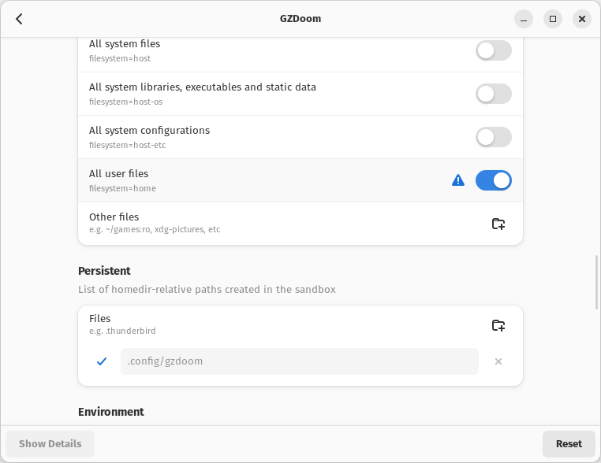
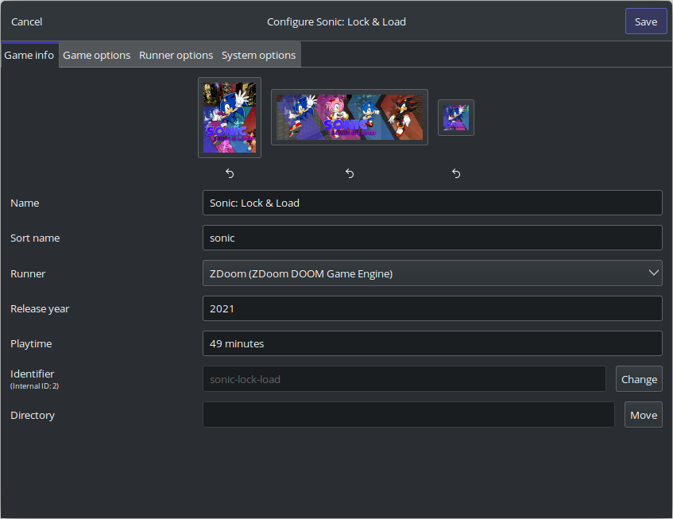
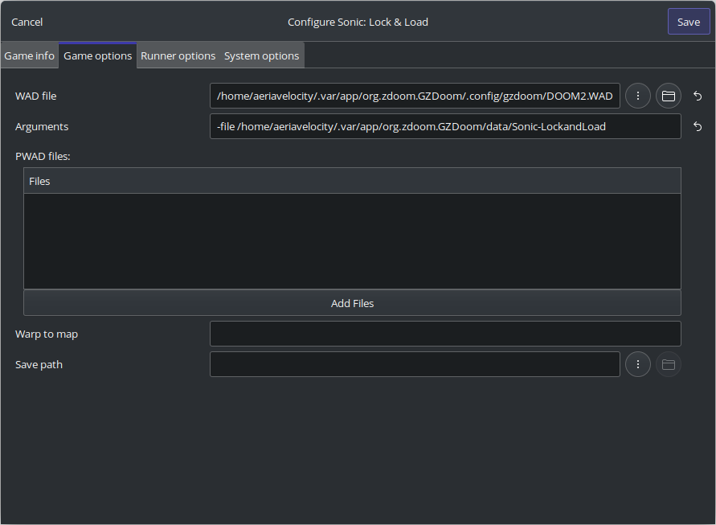

Installing on Linux
Requirements
- Flathub-enabled Linux system
- Graphical environment (X11 or Wayland)
- Flatseal (optional)
- DOOM II: Hell on Earth's
doom2.wad(you can get DOOM II from Steam or GOG) - Freedoom: Phase 2's
freedoom2.wadif you don't want to use DOOM II - Lutris (optional but highly recommended)
Steam Deck users: You need to switch to Desktop Mode to follow these instructions - you can't do it in Game Mode. You can still add Sonic: Lock & Load as a non-Steam game later. Keep in mind I don't own a Steam Deck myself, so official support is heavily limited. Your mileage may vary.
Important Note
This guide will specifically focus on the Flatpak version of GZDoom, since this is the version accessible from practically every Linux distribution under the sun.
If you're using something else, like the Ubuntu package or AppImage, or even running the Windows version under Wine (if you are, follow the Windows instructions), some instructions may be different or outright incorrect.
Please note support is primarily offered for Flatpak users.
Installing GZDoom
If your Linux distro has a graphical app store (GNOME Software or KDE's Discover), search for GZDoom there. If you're using a Steam Deck, GZDoom will be available in Discover.
Otherwise, you can run flatpak install org.zdoom.GZDoom at the command line.
Setting up GZDoom
Navigate to ~/.var/app/org.zdoom.GZDoom/.config/gzdoom/ and drop DOOM2.WAD in there.
An easier way to do this is simply to enter the following command in your Terminal:
cp /path/to/DOOM2.WAD ~/.var/app/org.zdoom.GZDoom/.config/gzdoom/
Getting a copy of the game
Simply download the Standalone PK3 for the latest stable version or git clone the Sonic: Lock & Load repository for the latest development version.
It's recommended you put the PK3 somewhere where it won't be lost, like in a "DOOM Mods" directory - don't put it in your home directory or Documents folder, and definitely don't keep it in Downloads.
To better integrate Sonic: Lock & Load with your GZDoom installation, you can alternatively place the PK3 inside ~/.var/app/org.zdoom.GZDoom/data/.
Granting GZDoom access to your files
Yes, I know.
You technically don't need Flatseal for this - you can do it with flatpak override org.zdoom.GZDoom --filesystem=home.
But this is much easier, and this guide is aimed towards beginners who are new to Linux.
If you're comfortable doing this at the command line, do it at the command line. Otherwise, use Flatseal.
Open Flatseal up and click "GZDoom (org.zdoom.GZDoom)". Scroll down until you reach the "Filesystem" heading.
There should be an option called "All user files (filesystem=home)" - enable it to make GZDoom's Flatpak aware of your home directory.
If you need to unrestrict more access to your system (which you shouldn't have to but it's not my perogative), you can additionally enable access to your system files, all installed libraries and executables, and system configurations, as well as anywhere else also.
Adding and running the game in Lutris
To make running the game a whole lot easier, using Lutris, click Add Game (the + icon) and select "Add locally installed game".
Then, fill out the "Game info" tab like so:
And fill out the "Game options" tab like so:
If you want to add your PK3 file to the "PWAD files" list, that works too.
Afterwards, click "Save", and Sonic: Lock & Load should be available in your Lutris menu.
When that's done, right-click on it and select "Create application menu shortcut" to have Lutris make a desktop entry that'll be recognised by your system.
Running the game without Lutris
- Use ZDL: Download and set up QZDL (Qt ZDoom Launcher), a Qt version of the venerable ZDL launcher. This is recommended if Sonic: Lock & Load is just one of the many mods you'll be playing for DOOM.
- Use the terminal: In your terminal, run
flatpak run org.zdoom.GZDoom --command=gzdoom -file path/to/Sonic-LockandLoad-vX.X.X.pk3. This is recommended if you're comfortable with the terminal and command-line tools in general. - Create a .desktop file: If you are using Lutris, right-click on Sonic: Lock & Load and select "Create application menu shortcut". If not, you can create a
.desktopfile yourself - there are various online tutorials.
And that's it!
You're now playing Sonic: Lock & Load. Have fun with it, and don't forget to configure the options in case you want to!
If you have any feedback, open an issue on Sonic: Lock & Load's GitHub.